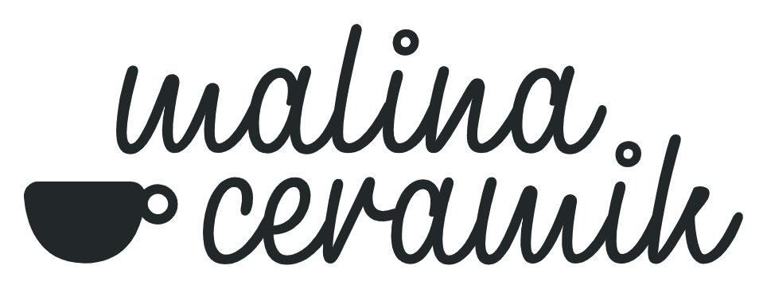

Stempel na glinie
Najbardziej pracowniane i spokojne. Logo zachowuje sie jak odcisk na miekkiej glinie.
Podglad animacji startowej
To sa lekkie prototypy ruchu, jeszcze nie podpiete do aplikacji. Kliknij “Odtworz jeszcze raz”, zeby zlapac rytm animacji.
Najbardziej pracowniane i spokojne. Logo zachowuje sie jak odcisk na miekkiej glinie.
Klimat wypalu: od ciepla i lekkiego blasku do spokojnego wejscia logotypu.

Bardziej kreatywne i urocze. Dobre, jesli chcemy pokazac lekki humor marki.
Najczystsze i najbardziej codzienne. Malo ruchu, duzo oddechu, nic nie przeszkadza.
Najbardziej satysfakcjonujace. Plamka gliny przechodzi w znak, a kolor lapie wypal.